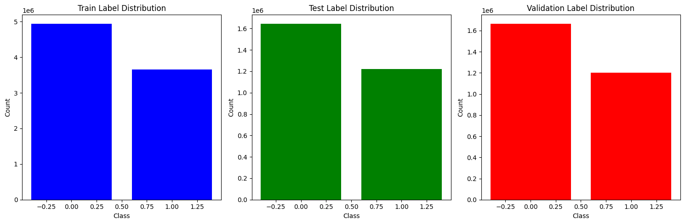

Sleep State Detection
CONCEPT
The “Zzzs” you catch each night are crucial for your overall health. Sleep affects everything from your development to cognitive functioning. Even so, research into sleep has proved challenging, due to the lack of naturalistic data capture alongside accurate annotation. If data science could help researchers better analyse wrist-worn accelerometer data for sleep monitoring, sleep experts could more easily conduct large-scale studies of sleep, thus improving the understanding of sleep's importance and function.
DATA
The dataset comprises about 500 multi-day recordings of wrist-worn accelerometer data annotated with two event types: onset, the beginning of sleep, and wakeup, the end of sleep. Your task is to detect the occurrence of these two events in the accelerometer series. While sleep logbooks remain the gold-standard, when working with accelerometer data we refer to sleep as the longest single period of inactivity while the watch is being worn. For this data, we have guided raters with several concrete instructions:
- A single sleep period must be at least 30 minutes in length
- A single sleep period can be interrupted by bouts of activity that do not exceed 30 consecutive minutes
- No sleep windows can be detected unless the watch is deemed to be worn for the duration (elaborated upon, below)
- The longest sleep window during the night is the only one which is recorded
- If no valid sleep window is identifiable, neither an onset nor a wakeup event is recorded for that night.
- Sleep events do not need to straddle the day-line, and therefore there is no hard rule defining how many may occur within a given period. However, no more than one window should be assigned per night. For example, it is valid for an individual to have a sleep window from 01h00–06h00 and 19h00–23h30 in the same calendar day, though assigned to consecutive nights
- There are roughly as many nights recorded for a series as there are 24-hour periods in that series.
- Though each series is a continuous recording, there may be periods in the series when the accelerometer device was removed. These period are determined as those where suspiciously little variation in the accelerometer signals occur over an extended period of time, which is unrealistic for typical human participants. Events are not annotated for these periods, and you should attempt to refrain from making event predictions during these periods: an event prediction will be scored as false positive. Each data series represents this continuous (multi-day/event) recording for a unique experimental subject.
PROCESS
The development of a predictive model has involved the implementation of the following procedural steps:
- Exploratory Data Analysis (EDA): The dataset has undergone thorough cleaning, and continuous data series, devoid of any gaps, has been selected for the purpose of model training.
- Feature Engineering: Lag features have been incorporated for Enmo and Angle-Z to introduce a temporal element. Additionally, various features such as "Hour of day," "Day of Month," and others have been appended to the dataset. The significance of these features has been assessed using SHAP (Shapley Additive explanations).
- Model Implementation: A Random Forest and HistGradientBoostingClassifier algorithm were employed for the model. Upon evaluation, it was determined that Random Forest outperformed HistGradientBoostingClassifier, achieving approximately 75% accuracy.

Cluster map of series data

Enmo and Angle-Z distributions
Class distributions for data split


Model evaluation